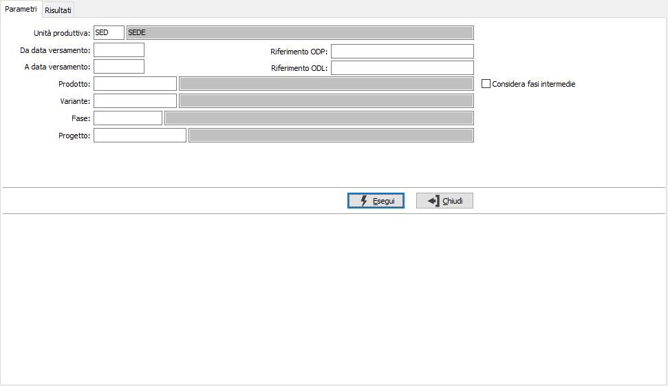
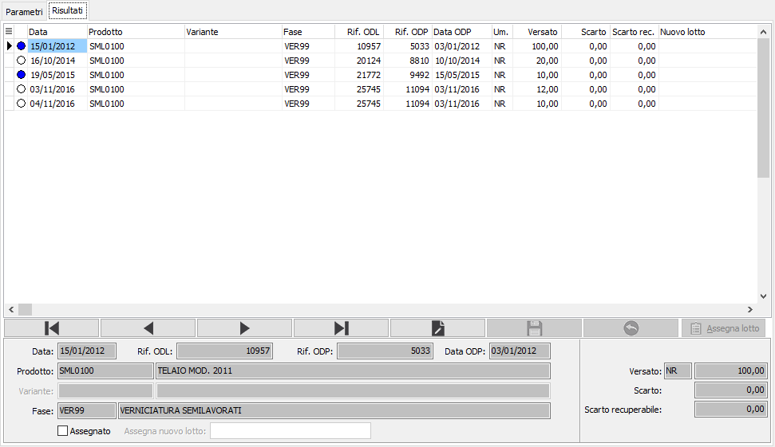

Se attiva la
gestione matricole sarà possibile, tramite il pulsante Matricole, dopo
aver effettuato l'assegnazione dei lotti, accedere alla finestra di gestione massiva.
Se attiva la
gestione matricole sarà possibile, tramite il pulsante Matricole, dopo
aver effettuato l'assegnazione dei lotti, accedere alla finestra di gestione massiva.Assegnazione lotto versamenti prodotti
La funzione consente di assegnare il codice del lotto del composto ai versamenti registrati; la funzione consente di operare anche contemporaneamente su più versamenti assegnando lo stesso lotto. E' necessario impostare l'unità produttiva, che se unica e configurata sarà proposta in automatico, è poi possibile specificare un range di date, un singolo riferimento ODP/ODL oppure un codice prodotto per eseguire la ricerca dei versamenti; è possibile effettuare l'assegnazioni anche su fasi intermedie, se spuntata l'apposita casella ed in questo caso è possibile anche specificare la singola fase, altrimenti saranno analizzati solo i versamenti all'ultima fase; se gestiti i progetti sarà possibile specificare un codice progetto.

Confermando tramite la pressione del bottone Esegui, viene avviata la selezione e richiamata la finestra video Risultati, dove vengono mostrati i versamenti trovati su cui è possibile effettuare l'assegnazione; questa può essere effettuata singolarmente utilizzando il pannello inferiore apponendo la spunta sulla relativa casella ed inserendo il lotto prescelto; l'assegnazione può essere effettuata anche multipla selezionando le righe con il doppio clic del mouse sulla griglia ed utilizzando il pulsante Assegna lotto, che si accenderà; compare una finestra in cui è possibile specificare un lotto che sarà assegnato automaticamente alle righe selezionate. Sulla griglia con il tasto destro del mouse si accede ad un menù dove sono presenti le funzioni di selezione/deselezione del singolo rigo o di tutte le righe e la possibilità di esportare il contenuto della griglia su Excel o negli appunti.
Una volta effettuate le necessarie assegnazioni premendo il pulsante Salva presente nella Toolbar sarà possibile effettuare il salvataggio definitivo.

Se attiva la
gestione matricole sarà possibile, tramite il pulsante Matricole, dopo
aver effettuato l'assegnazione dei lotti, accedere alla finestra di gestione massiva.